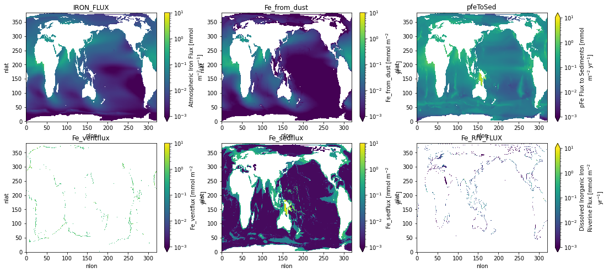
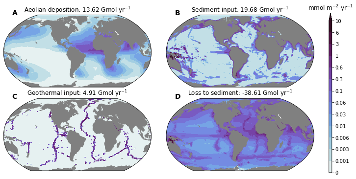
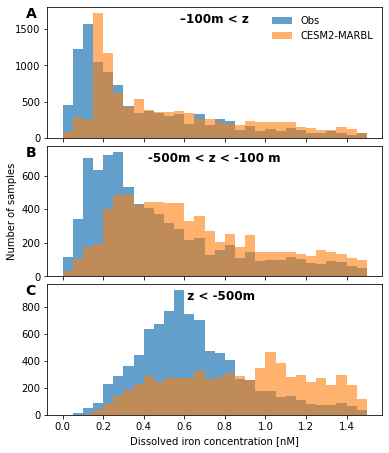
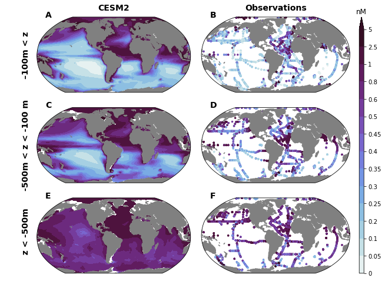

%load_ext autoreload
%autoreload 2
import os
from itertools import product
import pandas as pd
import numpy as np
import xarray as xr
import matplotlib.pyplot as plt
import matplotlib.gridspec as gridspec
import matplotlib.colors as colors
import cmocean
import cartopy
import cartopy.crs as ccrs
import xpersist as xp
cache_dir = '/glade/p/cgd/oce/projects/cesm2-marbl/xpersist_cache/3d_fields'
if (os.path.isdir(cache_dir)):
xp.settings['cache_dir'] = cache_dir
os.makedirs(cache_dir, exist_ok=True)
os.environ['CESMDATAROOT'] = '/glade/scratch/mclong/inputdata'
import pop_tools
import climo_utils as cu
import utils
import discrete_obs
import plot
import intake
catalog = intake.open_esm_datastore('data/campaign-cesm2-cmip6-timeseries.json')
df = catalog.search(experiment='historical', component='ocn', stream='pop.h').df
variables = df.variable.unique()
[v for v in variables if 'Fe' in v or 'iron' in v.lower() or 'sed' in v.lower() or 'dust' in v.lower()]
['ATM_COARSE_DUST_FLUX_CPL',
'ATM_FINE_DUST_FLUX_CPL',
'Fe',
'Fe_RIV_FLUX',
'Fe_scavenge',
'Fe_scavenge_rate',
'Fefree',
'IRON_FLUX',
'Jint_100m_Fe',
'P_iron_FLUX_100m',
'P_iron_FLUX_IN',
'P_iron_PROD',
'P_iron_REMIN',
'SEAICE_DUST_FLUX_CPL',
'SedDenitrif',
'bsiToSed',
'calcToSed',
'calcToSed_ALT_CO2',
'diatFe',
'diat_Fe_lim_Cweight_avg_100m',
'diat_Fe_lim_surf',
'diazFe',
'diaz_Fe_lim_Cweight_avg_100m',
'diaz_Fe_lim_surf',
'dustToSed',
'dust_FLUX_IN',
'dust_REMIN',
'pfeToSed',
'photoFe_diat',
'photoFe_diaz',
'photoFe_sp',
'pocToSed',
'ponToSed',
'popToSed',
'spFe',
'sp_Fe_lim_Cweight_avg_100m',
'sp_Fe_lim_surf',
'tend_zint_100m_Fe']
cluster, client = utils.get_ClusterClient()
cluster.scale(12) #adapt(minimum_jobs=0, maximum_jobs=24)
client
/glade/work/mclong/miniconda3/envs/cesm2-marbl/lib/python3.7/site-packages/distributed/dashboard/core.py:79: UserWarning:
Port 8787 is already in use.
Perhaps you already have a cluster running?
Hosting the diagnostics dashboard on a random port instead.
warnings.warn("\n" + msg)
Client
|
Cluster
|
ds_grid = pop_tools.get_grid('POP_gx1v7')
masked_area = ds_grid.TAREA.where(ds_grid.REGION_MASK > 0).fillna(0.).expand_dims('region')
masked_area #.plot()
/glade/work/mclong/miniconda3/envs/cesm2-marbl/lib/python3.7/site-packages/numba/np/ufunc/parallel.py:365: NumbaWarning: The TBB threading layer requires TBB version 2019.5 or later i.e., TBB_INTERFACE_VERSION >= 11005. Found TBB_INTERFACE_VERSION = 6103. The TBB threading layer is disabled.
warnings.warn(problem)
<xarray.DataArray 'TAREA' (region: 1, nlat: 384, nlon: 320)>
array([[[0.00000000e+00, 0.00000000e+00, 0.00000000e+00, ...,
0.00000000e+00, 0.00000000e+00, 0.00000000e+00],
[0.00000000e+00, 0.00000000e+00, 0.00000000e+00, ...,
0.00000000e+00, 0.00000000e+00, 0.00000000e+00],
[1.52530781e+13, 1.52530781e+13, 1.52530781e+13, ...,
0.00000000e+00, 0.00000000e+00, 0.00000000e+00],
...,
[0.00000000e+00, 0.00000000e+00, 0.00000000e+00, ...,
0.00000000e+00, 0.00000000e+00, 0.00000000e+00],
[0.00000000e+00, 0.00000000e+00, 0.00000000e+00, ...,
0.00000000e+00, 0.00000000e+00, 0.00000000e+00],
[0.00000000e+00, 0.00000000e+00, 0.00000000e+00, ...,
0.00000000e+00, 0.00000000e+00, 0.00000000e+00]]])
Dimensions without coordinates: region, nlat, nlon
Attributes:
units: cm^2
long_name: area of T cells
coordinates: TLONG TLATxarray.DataArray
'TAREA'
- region: 1
- nlat: 384
- nlon: 320
- 0.0 0.0 0.0 0.0 0.0 0.0 0.0 0.0 ... 0.0 0.0 0.0 0.0 0.0 0.0 0.0 0.0
array([[[0.00000000e+00, 0.00000000e+00, 0.00000000e+00, ..., 0.00000000e+00, 0.00000000e+00, 0.00000000e+00], [0.00000000e+00, 0.00000000e+00, 0.00000000e+00, ..., 0.00000000e+00, 0.00000000e+00, 0.00000000e+00], [1.52530781e+13, 1.52530781e+13, 1.52530781e+13, ..., 0.00000000e+00, 0.00000000e+00, 0.00000000e+00], ..., [0.00000000e+00, 0.00000000e+00, 0.00000000e+00, ..., 0.00000000e+00, 0.00000000e+00, 0.00000000e+00], [0.00000000e+00, 0.00000000e+00, 0.00000000e+00, ..., 0.00000000e+00, 0.00000000e+00, 0.00000000e+00], [0.00000000e+00, 0.00000000e+00, 0.00000000e+00, ..., 0.00000000e+00, 0.00000000e+00, 0.00000000e+00]]]) - units :
- cm^2
- long_name :
- area of T cells
- coordinates :
- TLONG TLAT
dust_to_Fe: conversion of dust to iron (nmol Fe/g Dust)
dust remin gDust = 0.035 gFe mol Fe 1e3 mmolFe
--------- * ----------- * ----------
gDust molw_Fe gFe molFe
molw_Fe = 55.845
dust_to_Fe_mmol = 0.035 / molw_Fe * 1.0e3
dust_to_Fe_mmol
0.6267347121497001
percm2_to_perm2 = 1e4
pers_to_peryr = 86400. * 365.
nmolcm3_to_nM = 1e3
nmolcm2s_to_mmolm2yr = 1e-9 * 1e3 * 1e4 * 86400 * 365.
µmolm2d_to_mmolm2yr = 1e-3 * 365.
mmols_to_Gmolyr = 1e-12 * 86400. * 365.
nmols_to_Gmolyr = 1e-18 * 86400. * 365.
time_slice = slice("1990-01-15", "2015-01-15")
varlist = [
'Fe',
'IRON_FLUX',
'Fe_RIV_FLUX',
'pfeToSed',
'dust_REMIN',
]
ds_list = []
for variable in varlist:
xp_func = xp.persist_ds(cu.read_CESM_var, name=f'{variable}', trust_cache=True)
ds_list.append(xp_func(
time_slice,
variable,
mean_dims=['member_id', 'time'],
))
ds = xr.merge(ds_list)
ds['dz'] = ds_grid.dz.drop('z_t') # drop z_t because precision issues cause diffs
ds['TAREA'] = ds_grid.TAREA
# add data from forcing files
ds = xr.merge((ds, cu.get_fesedflux_forcing(),))
# compute dust remin component
assert ds.dust_REMIN.attrs['units'] == 'g/cm^3/s'
ds['Fe_from_dust'] = (ds.dust_REMIN * dust_to_Fe_mmol * ds.dz).sum('z_t') * percm2_to_perm2 * pers_to_peryr
ds.Fe_from_dust.attrs['units'] = 'mmol m$^{-2}$ yr$^{-1}$'
ds['Fe_aeolian_input'] = ds.Fe_from_dust + ds.IRON_FLUX
ds.Fe_aeolian_input.attrs['units'] = 'mmol m$^{-2}$ yr$^{-1}$'
# compute global integrals
convert_glb_Gmolyr = dict(
IRON_FLUX=mmols_to_Gmolyr * 1e-4,
Fe_from_dust=1e-12 * 1e-4,
pfeToSed=-1. * nmols_to_Gmolyr,
Fe_ventflux=1e-12 * 1e-4,
Fe_sedflux=1e-12 * 1e-4,
Fe_RIV_FLUX=nmols_to_Gmolyr,
)
ds_glb = xr.Dataset()
for v in convert_glb_Gmolyr.keys():
ds_glb[v] = (masked_area * ds[v]).sum(['nlat', 'nlon']) * convert_glb_Gmolyr[v]
ds_glb[v].attrs['units'] = 'Gmol yr$^{-1}$'
global_Fe_inv = (ds.Fe * ds.TAREA * ds.dz).sum() * 1e-18
global_Fe_inv.attrs['units'] = 'Gmol'
# convert to nice units
with xr.set_options(keep_attrs=True):
for v in ['Fe', 'Fe_RIV_FLUX', 'pfeToSed', 'IRON_FLUX']:
if ds[v].attrs['units'] == 'mmol/m^3':
ds[v] = ds[v] * nmolcm3_to_nM
ds[v].attrs['units'] = 'nM'
elif ds[v].attrs['units'] in ['nmol/cm^2/s', 'mmol/m^3 cm/s']:
ds[v] = ds[v] * nmolcm2s_to_mmolm2yr
ds[v].attrs['units'] = 'mmol m$^{-2}$ yr$^{-1}$'
elif ds[v].attrs['units'] in ['mmol/m^2/s']:
ds[v] = ds[v] * 86400. * 365. #* 1e4
ds[v].attrs['units'] = 'mmol m$^{-2}$ yr$^{-1}$'
# make dataset map-plottable
dsp = utils.pop_add_cyclic(ds)
dsp.info()
assuming cache is correct
reading cached file: /glade/p/cgd/oce/projects/cesm2-marbl/xpersist_cache/3d_fields/Fe.nc
assuming cache is correct
reading cached file: /glade/p/cgd/oce/projects/cesm2-marbl/xpersist_cache/3d_fields/IRON_FLUX.nc
assuming cache is correct
reading cached file: /glade/p/cgd/oce/projects/cesm2-marbl/xpersist_cache/3d_fields/Fe_RIV_FLUX.nc
assuming cache is correct
reading cached file: /glade/p/cgd/oce/projects/cesm2-marbl/xpersist_cache/3d_fields/pfeToSed.nc
assuming cache is correct
reading cached file: /glade/p/cgd/oce/projects/cesm2-marbl/xpersist_cache/3d_fields/dust_REMIN.nc
xarray.Dataset {
dimensions:
nlat = 384 ;
nlon = 321 ;
z_t = 60 ;
variables:
float32 z_t(z_t) ;
float64 TLAT(nlat, nlon) ;
float64 TLONG(nlat, nlon) ;
float32 Fe(z_t, nlat, nlon) ;
Fe:long_name = Dissolved Inorganic Iron ;
Fe:units = nM ;
Fe:grid_loc = 3111 ;
Fe:cell_methods = time: mean ;
float32 IRON_FLUX(nlat, nlon) ;
IRON_FLUX:long_name = Atmospheric Iron Flux ;
IRON_FLUX:units = mmol m$^{-2}$ yr$^{-1}$ ;
IRON_FLUX:grid_loc = 2110 ;
IRON_FLUX:cell_methods = time: mean ;
float32 Fe_RIV_FLUX(nlat, nlon) ;
Fe_RIV_FLUX:long_name = Dissolved Inorganic Iron Riverine Flux ;
Fe_RIV_FLUX:units = mmol m$^{-2}$ yr$^{-1}$ ;
Fe_RIV_FLUX:grid_loc = 2110 ;
Fe_RIV_FLUX:cell_methods = time: mean ;
float32 pfeToSed(nlat, nlon) ;
pfeToSed:long_name = pFe Flux to Sediments ;
pfeToSed:units = mmol m$^{-2}$ yr$^{-1}$ ;
pfeToSed:grid_loc = 2110 ;
pfeToSed:cell_methods = time: mean ;
float32 dust_REMIN(z_t, nlat, nlon) ;
dust_REMIN:long_name = Dust Remineralization ;
dust_REMIN:units = g/cm^3/s ;
dust_REMIN:grid_loc = 3111 ;
dust_REMIN:cell_methods = time: mean ;
float64 dz(z_t) ;
dz:units = cm ;
dz:long_name = thickness of layer k ;
float64 TAREA(nlat, nlon) ;
TAREA:units = cm^2 ;
TAREA:long_name = area of T cells ;
TAREA:coordinates = TLONG TLAT ;
float32 Fe_ventflux(nlat, nlon) ;
Fe_ventflux:units = mmol m$^{-2}$ yr$^{-1}$ ;
float32 Fe_sedflux(nlat, nlon) ;
Fe_sedflux:units = mmol m$^{-2}$ yr$^{-1}$ ;
float64 Fe_from_dust(nlat, nlon) ;
Fe_from_dust:units = mmol m$^{-2}$ yr$^{-1}$ ;
float64 Fe_aeolian_input(nlat, nlon) ;
Fe_aeolian_input:units = mmol m$^{-2}$ yr$^{-1}$ ;
// global attributes:
}
df_glb = ds_glb.to_dataframe() #.sum(axis=1)
print(f'Global imbalance: {df_glb.sum(axis=1).values[0]:0.3f} Gmol/yr')
df_glb
Global imbalance: -0.032 Gmol/yr
| IRON_FLUX | Fe_from_dust | pfeToSed | Fe_ventflux | Fe_sedflux | Fe_RIV_FLUX | |
|---|---|---|---|---|---|---|
| region | ||||||
| 0 | 8.05681 | 5.566933 | -38.614945 | 4.905846 | 19.681022 | 0.372556 |
client.close()
cluster.close()
del client
del cluster
from matplotlib.colors import LogNorm
nvar = len(ds_glb.data_vars)
nrow = int(np.sqrt(nvar))
ncol = int(nvar/nrow) + min(1, nvar%nrow)
figsize=(6, 4)
fig, axs = plt.subplots(
nrow, ncol,
figsize=(figsize[0]*ncol, figsize[1]*nrow),
squeeze=False)
for n, v in enumerate(ds_glb.data_vars):
i, j = np.unravel_index(n, axs.shape)
ds[v].plot(ax=axs[i, j], norm=LogNorm(vmin=0.001, vmax=10.))
axs[i, j].set_title(v)

titles = dict(
Fe_aeolian_input=f'Aeolian deposition: {df_glb["IRON_FLUX"].values[0] + df_glb["Fe_from_dust"].values[0]:0.2f} Gmol yr$^{{-1}}$',
Fe_sedflux=f'Sediment input: {df_glb["Fe_sedflux"].values[0]:0.2f} Gmol yr$^{{-1}}$',
Fe_ventflux=f'Geothermal input: {df_glb["Fe_ventflux"].values[0]:0.2f} Gmol yr$^{{-1}}$',
pfeToSed=f'Loss to sediment: {df_glb["pfeToSed"].values[0]:0.2f} Gmol yr$^{{-1}}$',
)
titles
{'Fe_aeolian_input': 'Aeolian deposition: 13.62 Gmol yr$^{-1}$',
'Fe_sedflux': 'Sediment input: 19.68 Gmol yr$^{-1}$',
'Fe_ventflux': 'Geothermal input: 4.91 Gmol yr$^{-1}$',
'pfeToSed': 'Loss to sediment: -38.61 Gmol yr$^{-1}$'}
fields = ['Fe_aeolian_input', 'Fe_sedflux', 'Fe_ventflux', 'pfeToSed']
log_levels = [0., 0.001]
for scale in 10**np.arange(-3., 1., 1.):
log_levels.extend(list(np.array([3., 6., 10.]) * scale))
levels = {k: log_levels for k in fields}
fig = plt.figure(figsize=(12, 6))
prj = ccrs.Robinson(central_longitude=305.0)
nrow, ncol = 2, 2
gs = gridspec.GridSpec(
nrows=nrow, ncols=ncol+1,
width_ratios=(1, 1, 0.02),
wspace=0.15,
hspace=0.1,
)
axs = np.empty((nrow, ncol)).astype(object)
caxs= np.empty((nrow, ncol)).astype(object)
for i, j in product(range(nrow), range(ncol)):
axs[i, j] = plt.subplot(gs[i, j], projection=prj)
cax = plt.subplot(gs[:, -1])
cmap_field = cmocean.cm.dense
for n, field in enumerate(fields):
i, j = np.unravel_index(n, axs.shape)
ax = axs[i, j]
cf = ax.contourf(
dsp.TLONG,dsp.TLAT, dsp[field],
levels=levels[field],
extend='max',
cmap=cmap_field,
norm=colors.BoundaryNorm(levels[field], ncolors=cmap_field.N),
transform=ccrs.PlateCarree(),
)
land = ax.add_feature(
cartopy.feature.NaturalEarthFeature(
'physical','land','110m',
edgecolor='face',
facecolor='gray'
)
)
ax.set_title(titles[field]) #dsp[field].attrs['title_str'])
cb = plt.colorbar(cf, cax=cax, ticks=log_levels)
if 'units' in dsp[field].attrs:
cb.ax.set_title(dsp[field].attrs['units'])
cb.ax.set_yticklabels([f'{f:g}' for f in log_levels])
utils.label_plots(fig, [ax for ax in axs.ravel()], xoff=0.02, yoff=0)
utils.savefig('iron-budget-maps.pdf')

regions = {
'Southern Ocean': 1,
'Atlantic': 6,
'Indian': 3,
'Pacific': 2,
}
ds_grid.REGION_MASK.plot(vmax=6)
<matplotlib.collections.QuadMesh at 0x2b9b93561bd0>
df = discrete_obs.open_datastream('dFe')
df.obs_stream.add_model_field(ds.Fe)
df.obs_stream.add_model_field(ds_grid.REGION_MASK, method='nearest')
df
/glade/u/home/mclong/p/cesm2-marbl/notebooks/discrete_obs/tools.py:75: UserWarning: registration of accessor <class 'discrete_obs.tools.obs_datastream'> under name 'obs_stream' for type <class 'pandas.core.frame.DataFrame'> is overriding a preexisting attribute with the same name.
@pd.api.extensions.register_dataframe_accessor('obs_stream')
| lon | lat | depth | dFe_obs | Fe | REGION_MASK | |
|---|---|---|---|---|---|---|
| 0 | 210.010 | -16.0018 | 20.0 | 0.540000 | 0.065604 | 2.0 |
| 1 | 210.010 | -16.0018 | 35.0 | 0.440000 | 0.065562 | 2.0 |
| 2 | 210.010 | -16.0019 | 50.0 | 0.480000 | 0.066896 | 2.0 |
| 3 | 210.010 | -16.0019 | 80.0 | 0.400000 | 0.081158 | 2.0 |
| 4 | 210.010 | -16.0020 | 100.0 | 0.390000 | 0.096782 | 2.0 |
| ... | ... | ... | ... | ... | ... | ... |
| 27777 | 160.051 | 47.0032 | 3929.6 | 0.825681 | 0.850402 | 2.0 |
| 27778 | 160.051 | 47.0032 | 3929.8 | 0.902248 | 0.850392 | 2.0 |
| 27779 | 160.051 | 47.0032 | 4900.4 | 0.555630 | NaN | 2.0 |
| 27780 | 160.051 | 47.0032 | 4900.9 | 0.621851 | NaN | 2.0 |
| 27781 | 160.051 | 47.0032 | 5210.1 | 0.573220 | NaN | 2.0 |
27782 rows × 6 columns
plt.plot(df.dFe_obs, df.Fe, '.')
plt.xlabel('CESM2 dFe [nM]')
plt.ylabel('Obs dFe [nM]')
plt.plot([0, 5], [0, 5], 'r-')
[<matplotlib.lines.Line2D at 0x2b9cbabdfa50>]
fig, axs = plot.canvas(3, 1, figsize=(6, 2.5), use_gridspec=True, hspace=0.06)
dx = 0.05
bin_edges = np.arange(0., 1.5+dx, dx)
bins = np.vstack((bin_edges[:-1], bin_edges[1:])).mean(axis=0)
depth_ranges = {
'–100m < z': (0., 100.),
'-500m < z < -100 m': (100., 500.),
' z < -500m': (500., 1e36),
}
for n, (key, depth_range) in enumerate(depth_ranges.items()):
ax = axs[n, 0]
df_sub = df.loc[(depth_range[0] <= df.depth) & (df.depth <= depth_range[1])]
hist, _ = np.histogram(df_sub.dFe_obs.values, bin_edges)
ax.bar(bins, hist, width=dx, alpha=0.7, label='Obs')
hist, _ = np.histogram(df_sub.Fe.values, bin_edges)
ax.bar(bins, hist, width=dx, alpha=0.6, label='CESM2-MARBL')
if n == 0:
ax.legend(loc='upper right', frameon=False)
if n < 2:
ax.set_xticklabels([])
ylm = ax.get_ylim()
ax.text(0.75, ylm[1] - 0.12 * np.diff(ylm), key,
fontweight='bold',
fontsize=12,
ha='center',
)
if n == 1:
ax.set_ylabel('Number of samples')
if n == 2:
ax.set_xlabel('Dissolved iron concentration [nM]')
utils.label_plots(fig, [ax for ax in axs.ravel()], xoff=-0.05, yoff=-0.02)
utils.savefig('iron-global-ocean-obs-PDF')

residence_time = -(global_Fe_inv / ds_glb.pfeToSed).values[0]
print(f'Fe residence time: {residence_time:0.2f} yr')
Fe residence time: 28.33 yr
field = 'Fe'
levels = {'Fe': [0., 0.05, 0.1, 0.2, 0.25, 0.3, 0.35, 0.4, 0.45, 0.5, 0.6, 0.8, 1., 2.5, 5.0]}
fig = plt.figure(figsize=(10, 8))
prj = ccrs.Robinson(central_longitude=305.0)
nrow, ncol = 3, 2
gs = gridspec.GridSpec(
nrows=nrow, ncols=ncol+1,
width_ratios=(1, 1, 0.03),
wspace=0.05,
hspace=0.2,
)
axs = np.empty((nrow, ncol)).astype(object)
caxs= np.empty((nrow, ncol)).astype(object)
for i, j in product(range(nrow), range(ncol)):
axs[i, j] = plt.subplot(gs[i, j], projection=prj)
cax = plt.subplot(gs[:, -1])
cmap_field = cmocean.cm.dense
for i, (key, depth_range) in enumerate(depth_ranges.items()):
for j in range(2):
ax = axs[i, j]
if j == 0:
zslice = slice(depth_range[0]*100., depth_range[1]*100.)
cf = ax.contourf(
dsp.TLONG,dsp.TLAT, dsp[field].sel(z_t=zslice).mean('z_t'),
levels=levels[field],
extend='max',
cmap=cmap_field,
norm=colors.BoundaryNorm(levels[field], ncolors=cmap_field.N),
transform=ccrs.PlateCarree(),
)
else:
df_sub = df.loc[(depth_range[0] <= df.depth) & (df.depth <= depth_range[1])]
sc = ax.scatter(
df_sub.lon, df_sub.lat, c=df_sub.dFe_obs.values,
cmap=cmap_field,
norm=colors.BoundaryNorm(levels[field], ncolors=cmap_field.N),
s=6,
transform=ccrs.PlateCarree(),
)
land = ax.add_feature(
cartopy.feature.NaturalEarthFeature(
'physical','land','110m',
edgecolor='face',
facecolor='gray'
)
)
cb = plt.colorbar(cf, cax=cax, ticks=levels['Fe'])
if 'units' in dsp[field].attrs:
cb.ax.set_title(dsp[field].attrs['units'])
cb.ax.set_yticklabels([f'{f:g}' for f in levels['Fe']])
utils.subplot_col_labels(axs[0, :], ['CESM2', 'Observations'])
utils.subplot_row_labels(axs[:, 0], depth_ranges.keys(), xoff=60)
utils.label_plots(fig, [ax for ax in axs.ravel()], xoff=0.02, yoff=0)
utils.savefig('iron-concentration-maps.pdf')
